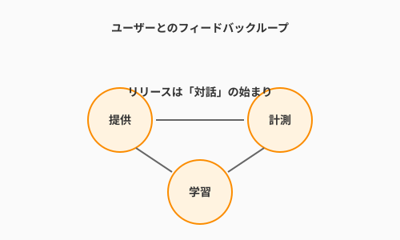

6.6 ユーザーとの共進化——フィードバックループ
導入: リリースは「対話」の始まり
多くの人は、ソフトウェアをデプロイし、本番環境に公開した瞬間に「仕事は終わった」と考えがちです。
しかし、アルケミスト（エンジニア）にとって、リリースはゴールではありません。それは、世界という広大な鏡に自分の作品を映し出し、ユーザーとの「対話」を始める神聖な儀式です。
ソフトウェアは、使われて初めて真の生命を宿します。ユーザーの反応という「魔力」を受け取りながら、環境に適応し、形を変え、成長していく。この「共進化」のプロセスこそが、ソフトウェア開発における「大いなる業（マグヌム・オプス）」であり、最もダイナミックな瞬間なのです。

理論的背景：なぜ「共進化」が必要か
ソフトウェアは完成した瞬間に劣化が始まる
現実世界は常に変化しています。昨日まで「最高」だった機能も、今日には「当たり前」になり、明日には「使いにくい」ものになるかもしれません。 外部環境の変化に合わせて自分自身を書き換え続けることが、ソフトウェアが「生命体」として生き残る唯一の道です。
確実な正解は誰にもわからない
どれほど熟練したアルケミストでも、新しい呪文（機能）がユーザーにどう受け入れられるかを完璧に予言することはできません。 「これが正しいはずだ」という仮説を立て、実際に世界に問いかけ、その結果から学ぶ。この謙虚な姿勢こそが、優れたプロダクトを生む源泉となります。
実践例：進化を支える魔法の技法
1. Feature Flags：不可視のルーン
新しい機能をデプロイしたけれど、まだ全員には見せたくない。あるいは、不具合が見つかったら即座にその機能だけを隠したい。 そんな時に役立つのが、Feature Flags（機能フラグ）という「不可視のルーン」です。
この技術を使えば、「コードを本番環境に置くこと（デプロイ）」と「ユーザーに機能を見せること（リリース）」を切り離すことができます。
# QuestForgeでの機能フラグのイメージ
def get_quest_reward(hero):
# 新しい「ガチャ報酬システム」のルーンが刻まれているかチェック
if feature_flags.is_enabled("new_gacha_reward_v2", user_id=hero.id):
# 演出の豪華な新システム
return advanced_alchemy_reward.generate()
else:
# 従来の安定した報酬システム
return basic_reward.generate()深夜に緊張しながらデプロイする必要はありません。コードは昼間のうちに静かに送り込み、準備が整った瞬間に、管理画面から「スイッチ」を入れるだけでリリースが完了します。
2. A/Bテスト：二つの聖杯の試練
「クエスト達成後の演出は、金色の光がいいか、それとも虹色の光がいいか？」 こうした問いに、会議室で議論を戦わせる必要はありません。A/Bテストで、世界に直接答えを聴きましょう。
- グループA（金の杯）: 従来の演出を見せる
- グループB（虹の杯）: 新しい演出を見せる
数日後、どちらのグループの方がより多くクエストを達成したか（継続率）を比較します。私たちの直感よりも、ユーザーの行動という「真実」を信じること。それが、最速でプロダクトを洗練させる近道です。
AI時代のアプローチ：万人の声を聴く「賢者の耳」
現代のアルケミストは、数万、数百万のユーザーからのフィードバックに直面します。これらすべてを人間が読み解くのは不可能です。ここでAIが「賢者の耳」として活躍します。
定性データの自動要約
SNS上のつぶやきや、アプリ内のレビューに散らばった「なんだか使いにくい」「ここが最高！」という生の声をAIが分析します。 「冒険者たちは、今のクエスト検索UIに少し不満を感じているようです。特にタグの絞り込みが分かりにくいという声が30%あります」といった、具体的な洞察（インサイト）を抽出してくれます。
センチメント分析（感情測定）
リリースした新機能によって、コミュニティの熱量は上がったのか、それとも冷え込んでしまったのか。 AIによる感情分析は、数値化しにくい「ユーザーの心拍数」を測定し、私たちが次に打つべき一手を教えてくれます。
ハンズオン：シンプルな機能フラグの実装
Pythonで、自分のプログラムに「魔法のスイッチ」を組み込んでみましょう。
import json
class FeatureManager:
def __init__(self, config_path):
self.config_path = config_path
self.reload()
def reload(self):
"""外部の設定ファイルからフラグを読み込む"""
with open(self.config_path, "r") as f:
self.flags = json.load(f)
def is_enabled(self, flag_name, user_id=None):
"""機能が有効かどうかを判定する"""
flag_config = self.flags.get(flag_name, False)
# 単純なON/OFF
if isinstance(flag_config, bool):
return flag_config
# ユーザーIDに基づいた一部公開（カナリアリリース）
if isinstance(flag_config, dict) and "percentage" in flag_config:
if user_id is None:
return False
# ユーザーIDをハッシュ化して、特定の割合のユーザーにだけ公開
return (hash(user_id) % 100) < flag_config["percentage"]
return False
# 使い方例
# flags.json: {"new_quest_ui": {"percentage": 20}}
manager = FeatureManager("flags.json")
if manager.is_enabled("new_quest_ui", user_id="hero_123"):
print("虹色のUIを表示！")
else:
print("標準のUIを表示")より深く理解するために
よくある誤解
-
誤解: フィードバックは「不満」だけを聴くためのものだ。
- 真実: ユーザーが「熱狂しているポイント」を見つけることこそが重要です。強みをさらに伸ばすことが、唯一無二のプロダクトを作る鍵となります。
-
誤解: ユーザーが言った通りのものを作ればいい。
- 真実: 「もし、私がユーザーに何が欲しいか問うていたら、彼らは『もっと速い馬が欲しい』と答えていただろう」というヘンリー・フォードの言葉は有名です。ユーザーの言葉の裏にある「真の願い（もっと早く移動したい）」を解釈するのがアルケミストの仕事です。
意識しておきたいポイント
- データとビジョンのバランス: A/Bテストの数値は強力な道具ですが、プロダクトのビジョン（魂）と組み合わせてこそ、最高の意思決定が生まれます。
- フラグの定期的な棚卸し: 役割を終えた機能フラグのコードは、定期的に整理しましょう。第5章で学んだリファクタリングの出番です。
まとめ
- リリースは始まり: ソフトウェアは世界に放たれた瞬間から、ユーザーとの共進化が始まる。
- Feature Flags: 公開のタイミングをコントロールし、安全に実験を行う。
- A/Bテスト: 直感ではなく「世界の反応」を基準に意思決定を行う。
- AIとの共闘: 膨大な定性データから、真に価値のあるインサイトをAIと共に救い出す。
未完成であることを恐れないでください。 むしろ、ユーザーと共に歩み、形を変え続けるソフトウェアこそが、最も美しく、力強い生命力を保ち続けることができるのです。
AIへの詠唱例
この節で学んだことを実践するためのプロンプト：
あなたはデータ駆動型のプロダクトマネージャーです。
QuestForgeに「デイリーログインボーナス」を導入したいと考えています。
この機能が「ユーザーの定着率（リテンション）」に貢献するかを確認するための
A/Bテストプランを立案してください。
追跡すべき主要なメトリクス（KPI）と、テストが成功したと判断する基準を明示してください。以下のユーザーレビュー（5件）を分析し、
「ユーザーが本当に困っていること」と「次に改善すべき機能の優先順位」を提案してください。
[レビュー内容をここに貼り付け]